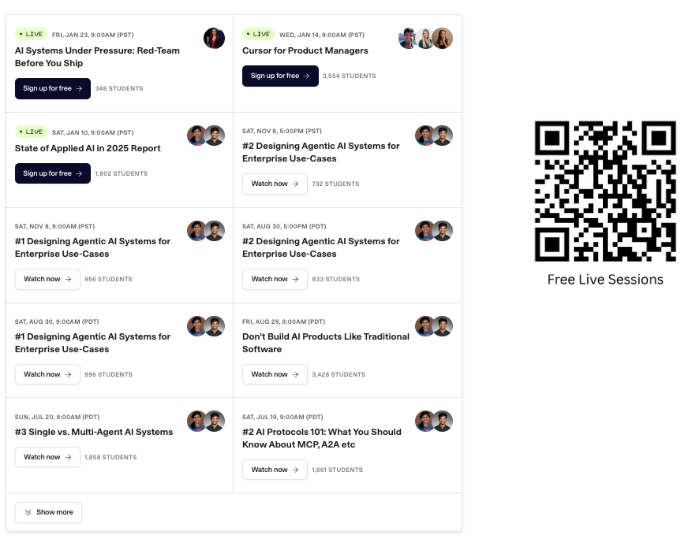
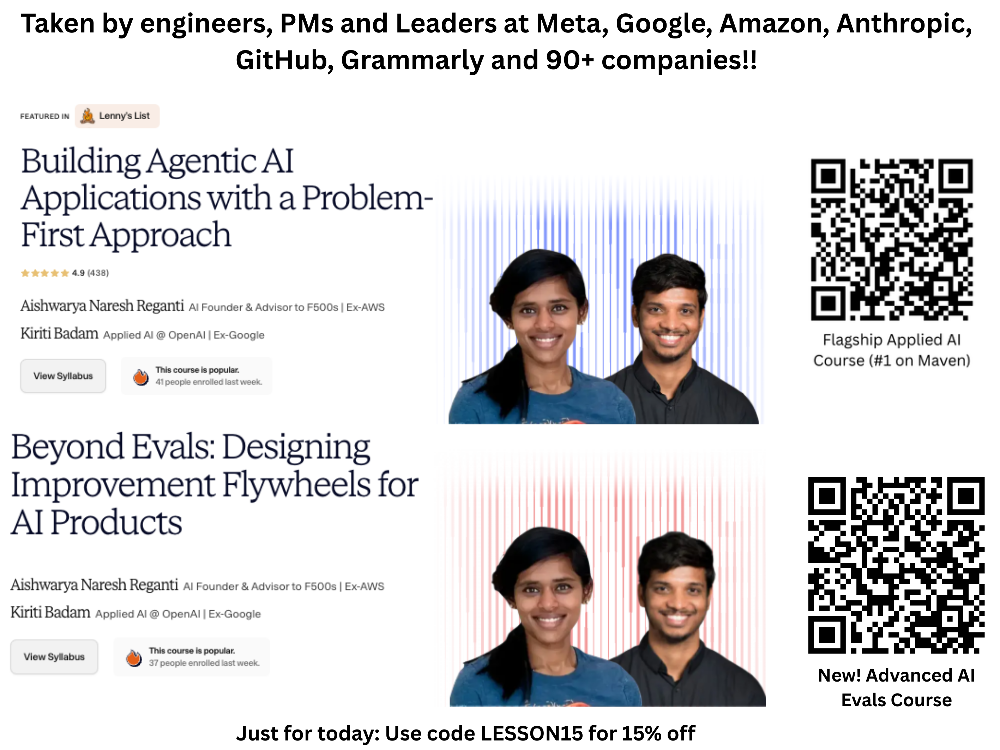
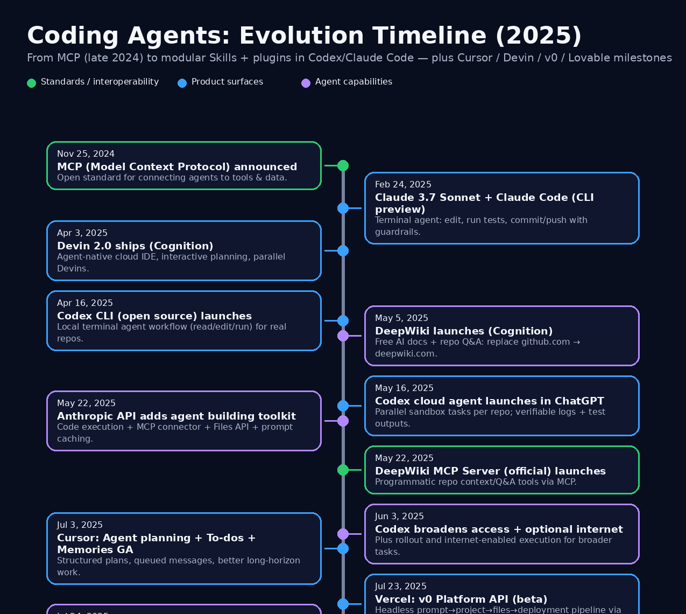
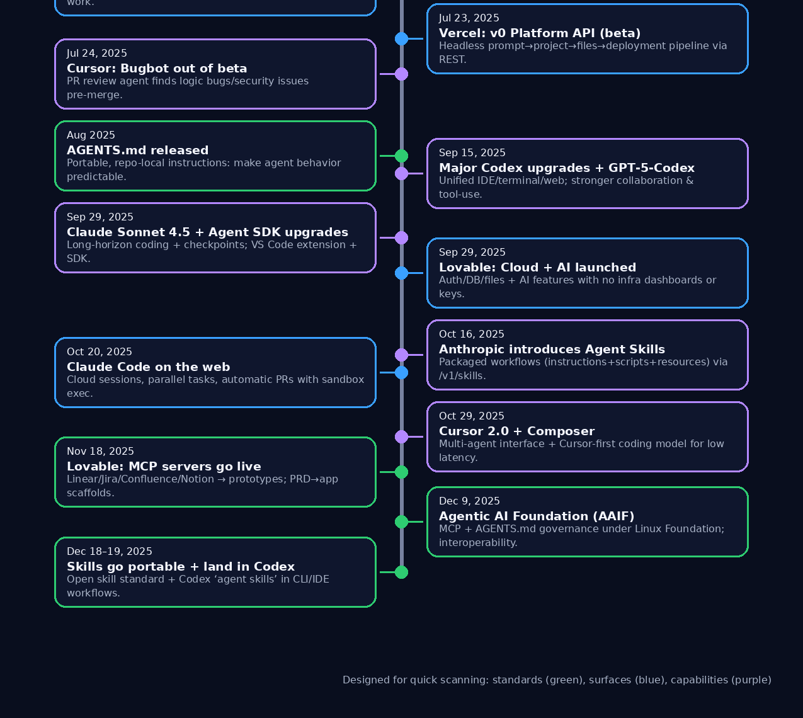
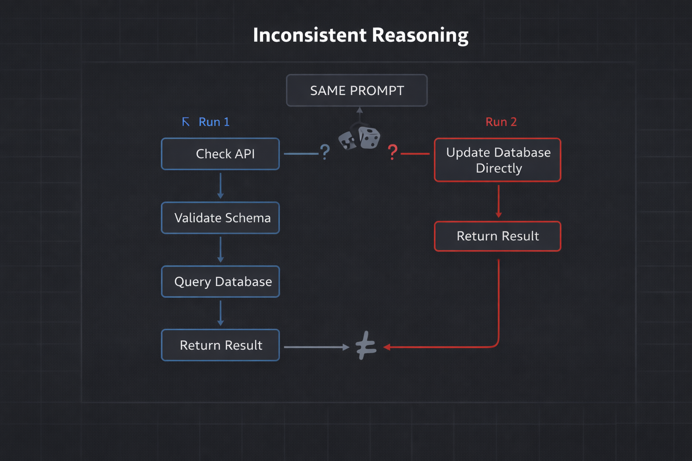
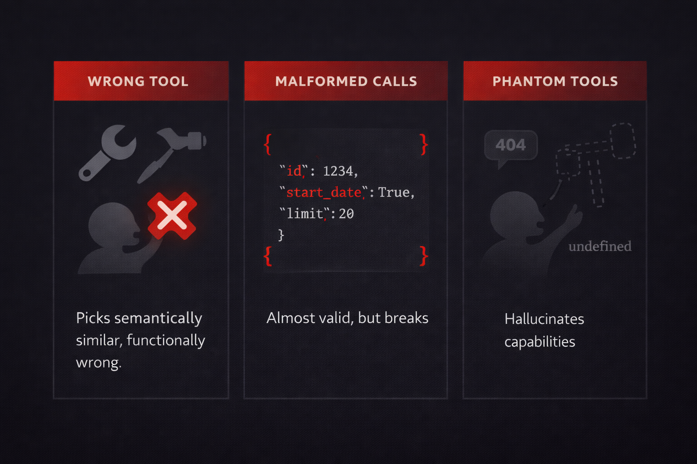
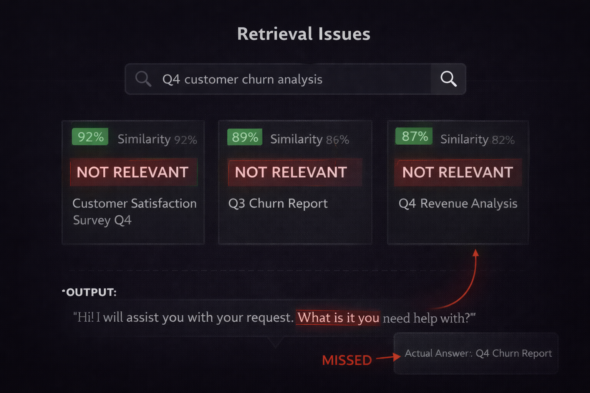

2025 Trends, Applied AI Challenges, and What to Look Forward to in 2026
Your Presenters
Aishwarya Naresh Reganti
Founder & CEO, LevelUp Labs
Early AI researcher at Alexa and Microsoft
35+ published research papers
Led 30+ AI implementations for AWS clients across legal, tech, banking, and medical
AI consulting clients include Deloitte, Microsoft, and Hitachi
Kiriti Badam
Building Codex at OpenAI
Building Codex, a software engineering agent
Previously built AI/ML + infrastructure at Google for ads-scale systems
Founding engineer at Kumo.ai (Forbes AI 50 startup)
We're also educators.
We create free and paid resources to help practitioners level up their AI skills.
Free AI Courses
Free Live Sessions

Paid Cohorts

What to Expect from This Session
You'll hear a lot of terms today. It's okay to feel overwhelmed—that's why we're recording this so you can revisit it later.
It's okay to not understand every word. We're keeping it as simple as possible so you can build a high-level story.
This is not an exec slide deck. No McKinsey-style reports, no name-dropping, no pitching numbers and figures.
This is practitioner-focused. Written by people actually working in this space, with realistic expectations—not a sales pitch.
What was the real breakthrough of 2025?
It wasn't just new model releases.
Models got better, but that wasn't what moved the needle for teams actually shipping AI.
It was plumbing.
Standards emerged. Integration got easier. The boring work of making agents actually work finally started paying off. The unglamorous infrastructure work became the competitive advantage.
The teams that shipped weren't the ones with the best models.
They weren't stuck contemplating which model to use. They knew how to connect everything together:and that's what mattered.
A Few Honest Lessons from 2025
Most of your time goes to integration. Not prompts, not model selection:connecting systems and handling edge cases.
Reliability beats capability. A predictable system is far better than something accurate but chaotic.
The model is the easy part. The hard part is everything around it:context, tools, evaluation, deployment.
Start narrower than you think. Build up to complex agents: making 10-step agents on day one only makes debugging harder.
What Most Teams Build
Impressive demos
Works in notebooks, fails in production. 95% never ship.
→
What Actually Ships
Boring reliability
Predictable, observable, recoverable. Does less, works always.
The Applied AI Stack
Four layers of the stack, plus the challenges that cut across all of them
What We'll Cover
Input Layer : From prompts to context engineering, meta-prompting, and multimodal
Model Layer : Foundation models, long context, RLVR, fine-tuning, and hybrid reasoning
Application Layer : Agents that actually ship, tool calling, and patterns that work
Output Layer : Trust as engineering, reliability math, and security frameworks
What's Still Broken : Hallucinations, RAG stagnation, and the production gap
Road Ahead : What 2026 looks like and how to prepare
Section 1
Input Layer
From Prompt Craft to Context Engineering
What Changed in the Input Layer
Prompt engineering evolved. From brittle skill-based craft to automated optimization.
Meta-prompting emerged. Models now generate and refine prompts automatically.
Automatic prompt optimization. Tools that iterate and improve prompts without human intervention.
Context engineering matters more. What you put in the prompt matters more than how you phrase it.
Multimodal became table stakes. Images, audio, and video as inputs moved from experimental to expected.
Prompting 2024
In 2024, prompting was a craft.
Models were sensitive. Small changes in wording produced wildly different outputs. Prompt engineering was a skill that took months to master.
Prompting 2024
Prompting in 2024: A Fragile Art
Brittle & Model-Specific
Prompts that worked on GPT-4 failed on Claude. Minor updates broke production systems. Every model needed different phrasing.
Skill-Based Techniques
Chain-of-Thought, Tree-of-Thought, ReAct patterns. Researchers published papers on prompting techniques. It was a specialized skill.
Manual Iteration
Teams spent weeks A/B testing prompts. Small word changes = big output differences. Prompt engineering was expensive and slow.
Prompting 2024
Some Research Papers That Defined 2024
These techniques worked, but required expertise to implement correctly. Most teams struggled to replicate paper results.
2025 Shift
Then models got smarter.
2025 models are less brittle. They understand intent better. Careful phrasing matters less. And we found ways to automate the optimization.
2025 Shift
2024 Approach
"How do I phrase this?"
Manually crafting prompts, testing variations, hoping it works across models
→
2025 Approach
"Let the model write it"
Meta-prompting and automated optimization. Models generate better prompts than humans.
Meta-Prompting
What is Meta-Prompting?
A meta-prompt instructs the model to create a good prompt based on your task description. Instead of writing prompts yourself, you describe what you want and the model generates an optimized prompt.
Meta-Prompting
Meta-Prompting: How It Works
The idea is simple: Use a prompt to generate prompts.
OpenAI's Playground uses meta-prompts behind the "Generate" button. You describe your task, and it creates a complete, optimized prompt.
The meta-prompt includes best practices:
Understand the task objectives and constraints
Encourage reasoning before conclusions
Include high-quality examples with placeholders
Specify output format explicitly
Add edge cases and important notes
Task Description → Meta-Prompt → Optimized Prompt
Models generate better prompts than most humans can write manually
Meta-Prompting
Meta-Prompting: Before & After
What You Write
"I need a prompt for sentiment analysis of customer reviews"
Just describe your task in plain language. No prompt engineering expertise required.
What the Model Generates
Analyze customer review sentiment.
# Steps 1. Read the review carefully 2. Identify emotional indicators 3. Consider context and nuance 4. Classify as positive/negative/neutral
# Output Format JSON with sentiment and confidence score
# Examples [Detailed examples with edge cases...]
Meta-Prompting
What OpenAI's Meta-Prompt Does
Understands the task: Grasps objectives, requirements, constraints, and expected output.
Enforces reasoning order: Reasoning steps before conclusions. Never start examples with answers.
Includes examples: High-quality examples with placeholders for complex elements.
Preserves user content: Keeps any details, guidelines, or examples you provide.
Source: OpenAI Prompt Generation Guide — the meta-prompt behind their Playground's Generate button.
Meta-Prompting
Why Meta Prompting is Super Valuable
Faster Iteration
Generate 10 prompt variations in seconds. Test all of them. Pick the winner. What took days now takes minutes.
Best Practices Built-In
Meta-prompts encode years of prompt engineering research. You get chain-of-thought, examples, and structure automatically.
Democratized Expertise
You don't need to be a prompt engineer. Describe what you want in plain English. The model handles the craft.
Auto Optimization
Beyond meta-prompting: Automatic Optimization
Meta-prompting generates prompts. But what if you could automatically iterate and improve them based on actual performance? That's automatic prompt optimization.
Auto Optimization
DSPy: Automated A/B Testing for Prompts
Instead of manually tweaking prompts and hoping they work, DSPy automatically tries different variations, measures which ones perform best, and keeps the winners. It's like having a tireless intern who tests thousands of prompt variations for you.
Auto Optimization
Manual Prompting
Guess and Check
Write a prompt. Test it. Doesn't work well? Tweak it. Test again. Repeat for hours. Still breaks on edge cases.
→
DSPy
Automatic Optimization
Give examples of what "good" looks like. DSPy tries hundreds of prompt variations automatically and finds what works best.
Auto Optimization
How DSPy Finds the Best Prompt
You provide task + data. DSPy generates prompt variations. The loop scores, selects best, and repeats until optimized.
Auto Optimization
DSPy in Action
What You Write
# Define: question in, answer out
qa = dspy.ChainOfThought("question -> answer")
# Give 10-20 examples
examples = [...]
# Let DSPy optimize
optimized = dspy.compile(qa, examples)
What DSPy Figures Out
"Given the question, reason step-by-step. First identify the key concepts. Then consider relevant facts. Finally, synthesize into a clear answer. Format:
In 2024, processing images alongside text was a differentiator. In 2025, it's table stakes. Systems that only handle text are increasingly inadequate for real-world use cases.
Multimodal
What Multimodal Inputs Enable
Customer Service
User sends a screenshot of an error message with their complaint. The model sees both, understands the context, and provides a relevant solution. No more "please describe what you see."
Code & Development
Share a photo of a whiteboard diagram and ask "implement this architecture." Upload a UI mockup and get working code. The model understands visual intent, not just text descriptions.
Document Processing
Feed invoices, receipts, contracts — the model reads text, understands layout, interprets signatures and stamps. No need to extract text first; it sees the whole document.
Multimodal
Why Multimodal Works Now
2024 models could see images. 2025 models understand them.
The latest models (GPT-5.2, Claude Opus 4.5, Gemini 3) have native multimodal understanding — images, audio, and video are first-class inputs, not bolted-on features.
Better accuracy: Models reason about visual and text context together, reducing hallucinations
Lower latency: No separate OCR or vision pipeline needed — one model handles everything
Richer context: A picture is worth a thousand tokens of description you don't have to write
Image + Text → Understanding
Not image-to-text + text-to-understanding anymore
Input Layer: Key Takeaways
Let models write your prompts. Meta-prompting generates better prompts than manual crafting. Use it.
Automate prompt optimization. Tools like DSPy iterate faster than humans. Stop manual A/B testing.
Focus on context, not phrasing. What you put in the prompt matters more than how you say it.
Plan for multimodal now. If your AI system only handles text, you're building technical debt.
Section 2
Model & Data Layer
From "bigger is better" to "think before you speak"
What Changed in the Model Layer
Models learned to think. System 2 reasoning emerged: models that allocate compute dynamically based on problem difficulty.
RLVR changed training. Reinforcement Learning with Verifiable Rewards proved you can train reasoning without human labels.
Context windows hit 1M tokens. But effective use of long context requires more than just bigger windows.
Efficiency became a priority. Quantization and distillation made frontier capabilities accessible on consumer hardware.
System 2 Reasoning
The biggest shift in 2025: models that think before they speak.
Instead of generating tokens as fast as possible, these models allocate more compute to harder problems. The result: dramatically better reasoning on complex tasks.
System 2 Reasoning
System 1
Fast, Intuitive
Immediate responses. Pattern matching. Great for simple queries, but prone to confident errors on hard problems.
→
System 2
Slow, Deliberate
Models allocate thinking time proportional to difficulty. More reliable on complex reasoning, but 3-5x slower.
System 2 Reasoning
Why System 2 Reasoning Matters
Dynamic Compute Allocation
Simple questions get quick answers. Complex problems trigger extended reasoning chains. The model decides how hard to think based on the task.
Visible Thinking Process
You can see the model's reasoning in its "thinking" tokens. This makes debugging easier and helps identify where reasoning goes wrong.
Trade Speed for Accuracy
For tasks where correctness matters more than latency—code generation, complex analysis, multi-step reasoning—the tradeoff is worth it.
System 2 Reasoning
Test-Time Compute = Thinking Time × Tokens
The new scaling law: you can improve outputs by letting models think longer
2024's scaling law was about training compute. 2025's insight: inference compute matters too.
Models can solve harder problems by spending more compute at inference time, not just at training time.
RLVR
2024 was the year of RLHF.
Reinforcement Learning from Human Feedback. Humans rank model outputs. The model learns what humans prefer. This gave us helpful, harmless assistants—but it doesn't scale, and "sounds good" isn't the same as "is correct."
RLVR
2025 introduced RLVR: rewards you can verify automatically.
Reinforcement Learning with Verifiable Rewards. Give the model problems with checkable answers—math proofs, code that compiles, logic puzzles. Tell it only right or wrong. No human labelers needed. Scales with compute, not headcount.
RLVR
RLHF vs RLVR: The Key Difference
RLHF asks "which sounds better?" RLVR asks "is this correct?" One requires humans. One requires only a verifier.
RLVR
RLVR compresses search into intuition.
What looks like "reasoning" is actually learned search patterns. The model isn't thinking step-by-step—it's pattern matching on solution strategies it learned during training.
RLVR
The Self-Correction Breakthrough
RLVR-trained models learned something unexpected: how to catch and correct their own mistakes.
Models detect when reasoning is going wrong
They backtrack and try different approaches
This emerged naturally from the training process
The results:
40-60% fewer hallucinations in trained domains
Models express uncertainty instead of fabricating
Graceful degradation on hard problems
RLVR excels at
Code • Math • Logic • Structured Tasks
RLVR struggles with
Creative Writing • Subjective Tasks
Long Context
1M
tokens in a single context window
That's ~700 pages. Entire codebases. Full research papers with all citations. But there's a catch.
Long Context
Context Windows Exploded in 2025
1M
Gemini 3 Pro
~700 pages input
400K
GPT-5.2
~128K output cap
200K
Claude Opus 4.5
Up to 1M enterprise
Entire codebases in context. Multi-document analysis without chunking. Complex reasoning across long dependencies.
Long Context
Claimed context ≠ effective context.
Models can accept 1M tokens. That doesn't mean they use them well. Information in the middle gets lost. Retrieval quality degrades with distance. Test your specific use case.
Long Context
The Long Context Reality Check
"Lost in the middle" problem persists. Models remember beginnings and ends better than middles. Structure your context accordingly.
Costs scale linearly. 10x more context = 10x higher cost. Strategic context management still matters.
Latency increases. Longer context means slower first-token response. Plan for user experience.
Quality varies by model. Some models handle 1M well. Others degrade at 100K. Benchmark your specific tasks.
Efficiency
2025's hidden story: frontier capabilities on consumer hardware.
Quantization, distillation, and mixture-of-experts made models 10x more accessible.
Efficiency
Quantization: Smaller Without Losing Quality
Reduce precision from 32-bit to 4-bit. Same model, 8x smaller, runs on consumer hardware. Quality loss is minimal for most production tasks.
Fine-Tuning
Fine-tuning: training a model on your specific data.
Take a general-purpose model. Train it further on domain-specific examples. The result: a model that speaks your industry's language, follows your formats, and understands your context—often matching larger models at a fraction of the cost.
Fine-Tuning
Where Fine-Tuning Made the Difference in 2025
Healthcare: Medical records have unique structures, abbreviations, and terminology. Fine-tuned models outperformed general models on clinical tasks with less bias.
Finance: Internal terminology in earnings reports and risk assessments that general models couldn't parse. Domain-specific fine-tuning unlocked understanding.
Legal: Compliance and regulatory interpretation requires jurisdiction-specific knowledge that general models consistently miss.
Scientific Research: Molecular science, drug discovery, and chemistry tasks where specialized notation and domain knowledge are essential.
Fine-Tuning
But always start with prompting. Fine-tune only when you have to.
Prompting is faster to iterate, requires no training data, and works for most use cases. Fine-tune when you're running the same task at massive scale, need consistent output formats, or require domain knowledge the base model lacks.
Distillation
Distillation became the default deployment strategy.
Use a large model to generate training data. Train a smaller model on that data. Deploy the small model at 10x lower cost. This pattern—70B teacher to 7B student—drove most production cost optimizations in 2025.
Distillation
Where Domain-Specific Models Shine
Healthcare
Medical coding from clinical notes. Drug interaction checking. Radiology report generation. Anywhere regulatory precision matters.
Legal
Contract clause extraction. Case law research. Compliance document review. Tasks requiring jurisdiction-specific knowledge.
Finance
Earnings call summarization. Risk factor analysis. Regulatory filing generation. Domain jargon and format requirements.
Code
Repository-specific assistants. Internal API documentation. Company coding standards enforcement. Codebase-aware refactoring.
The pattern: General models for exploration, specialized models for production.
Model Layer: Key Takeaways
System 2 reasoning trades speed for accuracy. Use thinking models for complex tasks where correctness matters more than latency.
RLVR enables self-correction. Models trained with verifiable rewards catch their own mistakes on structured tasks.
Long context ≠ infinite context. Test effective context length for your use case. The middle gets lost.
Small + specialized beats large + general. Fine-tuned 7B often outperforms 70B at 10% the cost.
Section 3
Application Layer
From "Which model?" to "Can it do real work?"
Application
What Changed in the Application Layer
Delegation Replaced Answers
Success shifted from “good responses” to “completed outcomes.”
RAG Became Infrastructure
Hybrid retrieval, reranking, and structure-aware pipelines replaced naive chunking.
Agent Types Diverged
Deep research, ambient automation, computer-use, and coding became distinct surfaces.
Standards Consolidated
MCP + A2A shifted into open governance; fragmentation started to recede.
RAG
Flashback: What RAG Is
RAG = Retrieve → Augment → Generate
Retrieve: pull the most relevant chunks from your knowledge base
Augment: inject those chunks into the model’s context
Generate: answer using retrieved evidence (ideally with citations)
Naive RAG meant one-shot retrieval and hope. It breaks on synthesis, drift, and noisy chunks.
Then context windows increased—and people assumed RAG was over.
If you can fit a whole corpus into context, why retrieve at all? That was the belief. Reality was messier: cost, freshness, permissions, and noise didn’t disappear.
RAG
RAG didn't die. Naive RAG did.
Long context is a bigger desk. RAG is still choosing the right papers to put on it—and doing so under real-world constraints.
RAG
Why Retrieval Stayed Relevant
Cost control. Huge context windows are expensive. Retrieval lets you pay only for what you need.
Freshness. If data changes daily, you don't want to keep repacking massive context. Fetch what's current.
Access control. "Put it all in the prompt" breaks down when different users have different permissions.
Auditability. Retrieval makes it easier to show what sources were used and why.
Long‑context reality: Databricks finds performance often peaks, then degrades as context grows—effective context is shorter than the max window.
Hosted file search + parsers became standard. Extraction quality became the dominant bottleneck.
Parsing Stack
Layout: sections, tables, headings, footnotes
Images: OCR + captioning + diagram text
Chunking: structure-aware splits for clean retrieval
RAG
RAG Moved Into Platforms
What it is
Managed RAG Engines
Managed vector DB + retrieval strategies (KNN/ANN) with tunable index parameters.
Hosted File Search
Vector stores that auto‑parse/chunk/embed, with query rewrite + keyword/semantic search and reranking.
Warehouse‑Native RAG
Hybrid retrieval + semantic reranking built into governed data platforms.
Platform primitives now include: vector storage, retrieval strategy, and retrieval controls
Governance pressure: keep retrieval near data, reuse platform security and access controls
2025 trend
Buy vs build shifted: teams start with managed RAG engines, hosted file search, or warehouse‑native search—and customize only where needed.
Examples
Vertex AI RAG Engine: managed vector storage, chunking, and retrieval strategies
OpenAI File Search: auto parsing/chunking + keyword/semantic search + reranking
Snowflake Cortex Search: hybrid retrieval with semantic reranking built in
RAG
Hybrid + Reranking Is the Baseline
What it is
1
BM25 + Vector
2
RRF Fusion
3
Semantic Rerank
Why hybrid
Keyword hits + semantic similarity raises recall on real queries
Why rerank
Second‑stage ranking improves precision on the short list
Knobs that matter: text recall window (maxTextRecallSize), RRF fusion, and reranker on/off
Where it shows up: hybrid queries fuse with RRF, then semantic rankers rerank top results
2025 trend
Hybrid + rerank shipped as defaults across platforms; retrieval quality became tunable engineering, not guesswork.
Where it’s baked in
Azure AI Search: RRF fusion for hybrid results + semantic reranker on top
Amazon Bedrock KB: reranker models can be applied during retrieval
Snowflake Cortex Search: hybrid retrieval + semantic reranking by default
Agents
2025 Was the Year of Agents
Research Agents
Multi‑step analysis that produces auditable reports and citations.
Computer‑Use Agents
Browser + UI automation when APIs don’t exist.
Coding Agents
IDE, terminal, and PR surfaces for real engineering work.
Workflow Agents
Ops/support/app‑building workflows with reviewable outputs.
The signal: agents shipped across categories, not just in one standout demo.
Agents
2025’s T‑Shape: Wide Wins + A Few Deep Wins
Wide (Shallow) Wins
Bounded workflows with review gates
Customer support, IT/service desk, internal ops
Value came from speed + coverage, not autonomy
Deep (Vertical) Wins
Auditable deliverables (citations, PRs, logs)
Deep Research‑style work where “good enough” still helps
Fewer domains, much higher ROI when it hits
Reality check: many projects stalled when ROI and reliability weren’t clear.
Agents
2025 was the year agent work split into distinct categories.
"Agent" stopped meaning "LLM that can call a tool" and started meaning "a system that can complete work across many steps, over time, with integration, and with guardrails."
Agents
Deep Agents: Long-Horizon Work
Deep agents handle tasks that take minutes to hours, with many steps, context management, and delegation.
Methodology: Plan → Delegate → Verify
Plan: break goals into verifiable subtasks
Delegate: route work to subagents or tools
Verify: check outputs before shipping
State: persist artifacts, not just chat history
Deep research products:
OpenAI Deep Research
Anthropic Research system (sub‑agents)
ChatGPT agent mode (research + action in one flow)
A quiet 2025 shift: spec‑clarification became a built‑in step. Lovable shipped a “questions tool” because most agent mistakes start with missing requirements.
Agents
Multi-Agent: When It Helps, When It Hurts
When It Helps
Parallel research: Multiple agents gather evidence simultaneously, then consolidate
Role separation: Planner, executor, reviewer as distinct agents
Tool specialization: Different agents with different permissions or domains
Parallel attempts: Multiple solutions, choose the best
When It Hurts
Non-determinism: Outcomes vary more with multiple agents
Coordination overhead: Agents disagree or duplicate work
Error amplification: One agent's wrong assumption spreads
Cost: You pay for parallel runs
Agents
Coding agents became the first place many teams experienced real agents.
Why? Software work has the perfect control surface: repos, tests, CI, and pull requests. Every step is visible. Humans steer via PR review. Claude Code, Cursor, and Copilot made this real.
Agents
Three Surfaces for Coding Agents
IDE Agents
Multi-step work inside your editor. Finds files, edits across modules, runs tests, fixes and retries. Cursor’s agent-first IDE pushed this surface forward.
Repo & PR Agents
Work through issues and pull requests in CI. Produce PRs, logs, and reviewable commits. GitHub Copilot coding agent made this a mainstream workflow.
Terminal Agents
Agentic coding from the command line. Delegates substantial engineering tasks from the terminal—Claude Code made this feel native.
Agents
Coding Agents: From Snippets to Full Tasks
Then: tab completion and small snippet help
Now: multi-file edits, tests, and CI-aware workflows
Shift: from “assist in-editor” to “deliver reviewable work”
Surface: PRs + agent workspaces became the control plane
2025 was the year coding agents moved from suggestions to execution.


Source: internal 2025 timeline
Agents
The Foundation: Tools Become Standard (Late 2024 → Early 2025)
Key beats
MCP made tool connectivity a standard (\"USB‑C for tools\")
Agent = model + tool protocol + runtime permissions
Integrations shifted from bespoke plugins to reusable wiring
Product signal: MCP servers + registries became a real ecosystem
Once tools became standard, the rest of the stack could scale.
Nov 2024Feb 2025
Tool Hub
GitHub • Jira • DB • Slack
Client Surfaces
IDE • Terminal • Web
Standard tool wiring
Agents
From Chat to Execution Loops (Feb → Jun 2025)
Key beats
Claude Code: terminal‑native agent workflow (edit, run tests, commit)
Codex CLI + cloud tasks: delegated work with logs + patches
Dev loop shifts to: plan → edit → run → verify → commit
You stop copying snippets; you start handing off tasks.
ROI + cost. Compute, integration, and oversight erase the business case.
Reliability. Long-horizon drift, tool misuse, and hard-to-debug failures.
Autonomy boundaries. Most teams require approval gates for write actions.
Security. Prompt injection, data leakage, and tool abuse expand the attack surface.
Brittleness. UI changes and unstable workflows break agents in production.
Skills
Skills: Packaged Expertise for Agents
Agents execute.
They reason, call tools, handle multi-step workflows. But agents are general-purpose—they don't inherently know your domain.
Skills equip.
Folders of instructions, scripts, and resources that agents load on demand. BigQuery queries. NDA review procedures. PDF extraction. Domain expertise, packaged and portable.
Agent configuration includes equipped skills and MCP servers. Skills live as directories in the agent's file system—loaded when relevant. Source: Anthropic
Frameworks
Frameworks stopped being libraries. They became runtimes.
Agents in 2025 aren’t just prompts and tools—they run inside systems built for state, control, and recovery.
Frameworks
What Changed in Agentic Frameworks
Explicit Workflows
Event-driven graphs with named steps and typed state replaced ad-hoc loops. The flow is visible and debuggable.
Durable State + Human Gates
Checkpoint, pause, and resume became native. Humans can approve, redirect, or recover long-running tasks.
Scalable Tool Use
Tool search + programmatic calling made orchestration explicit, cheaper, and more reliable than prompt-only routing.
Multi-Agent: Supported, Not Default
Coordination primitives matured, but teams learned to use multi-agent as an advanced pattern, not the default.
Tracing + Evals by Default
Observability and quality scoring moved into the runtime so agents can be monitored and graded.
Standards
2025 was the year everyone realized fragmentation would kill adoption.
Two different interoperability problems emerged. How do AI apps talk to tools and data sources? How do agents coordinate with other agents? The industry started racing toward standard rails.
Standards
Two Standards, Two Problems
MCP: Tool Connectivity
A universal connector contract so AI apps can talk to tools and data sources consistently.
Standardized tool descriptions
Any agent can understand any MCP-compatible tool
Reduces integration cost over time
A2A: Agent-to-Agent
A protocol for agents coordinating with other agents across systems.
Different layer than MCP
Enables multi-vendor agent collaboration
Critical for complex enterprise workflows
Standards
The Protocol Wars: From Fragmentation to Open Governance
April 2025: Google announces Agent2Agent (A2A) protocol. The agent-to-agent communication problem gets a proposed standard.
June 2025: Linux Foundation launches Agent2Agent protocol project. Microsoft publicly backs the open protocol.
December 2025: Anthropic donates MCP to Linux Foundation's "Agentic AI Foundation." Positioned explicitly around neutrality and open governance.
The pattern: Corporate-controlled APIs lose to open standards. Governance determines whether a standard becomes real infrastructure.
The move to Linux Foundation wasn't just about technology. It was about trust. Enterprises adopt standards they can rely on outlasting any single vendor's strategy.
Takeaways
Application Layer: Key Takeaways
RAG became engineered infrastructure. Naive RAG died; structure, reranking, multimodal parsing, and platformized retrieval became the baseline.
Agents diversified and proved value. Deep research, ambient/background automation, computer-use, and coding agents became distinct surfaces with real workflows.
Frameworks turned into runtimes. Explicit workflows, durable state, scalable tool use, and tracing/evals made agents operable—not just possible.
Skills packaged expertise. Reusable domain procedures + tool wiring became portable assets rather than one-off prompt glue.
Standards moved to open governance. MCP and A2A under Linux Foundation—protocols consolidated into neutral infrastructure.
Section 4
Output Layer
Evals & Production Monitoring
What's in the Output Layer
Evals became the bottleneck. Teams that shipped fast had evals running before features, not after.
Model evals vs product evals. Benchmarks tell you about the model. Production metrics tell you about your system.
Agent evaluation got structured. Four buckets emerged for evaluating agentic systems systematically.
Monitoring closed the loop. Real-time signals feeding back into development. The flywheel that compounds quality.
Quality Verification
Quality verification became the bottleneck for shipping AI.
Evals
Model Evals vs Product Evals
Model evals test the underlying model (benchmarks, capabilities). Product evals test your system (task completion, user success). Both matter—but product evals determine if you ship.
Evals
Evals
Offline Quality Assurance
Run before deployment. Test against known datasets. Catch regressions before users see them. Answer: "Is this change safe to ship?"
→
Monitoring
Online Quality Assurance
Run in production. Track real user interactions. Catch issues evals missed. Answer: "Is this working for actual users?"
Evals
Evals vs Monitoring: When They Run
Evals run offline before deployment. Monitoring runs online in production. Both essential—different timing, different purpose.
Evals
The eval mental model: What are you actually testing?
Every eval answers one of three questions. (1) Can it do the task at all? Capability. (2) Does it still do the task after changes? Regression. (3) Does it do the task the way we want? Alignment. Know which question you're asking.
Evals
Four Buckets for Agent Evaluation
1. Task Completion
Did the agent achieve the goal? Binary success/failure on well-defined objectives. The baseline metric.
2. Trajectory Quality
How did it get there? Efficient tool use, sensible step ordering, recovery from errors. The path matters.
3. Safety & Boundaries
Did it stay in bounds? No unauthorized actions, proper escalation, respecting guardrails. Trust requires limits.
4. Resource Efficiency
What did it cost? Tokens consumed, API calls made, time elapsed. Efficiency at scale.
Evals
The Grader Stack: Who Evaluates?
Deterministic checks first (fast, cheap). LLM-as-judge for scale (the 2025 breakthrough). Human review for calibration and edge cases.
Evals
Capability Evals
"Can it do new things?"
Testing new features. Expanding to new domains. Pushing boundaries. Run when adding capabilities.
↔
Regression Evals
"Does it still work?"
Catching breakage. Model updates, prompt changes, dependency shifts. Run on every change. Non-negotiable.
Monitoring
The Eval Flywheel: How Quality Compounds
Ship → Observe → Curate failures into eval cases → Eval before next deploy → Improve → Ship again. Each cycle makes the system more robust.
Building AI Products
If You're Building AI Products, Know This
Evals before features. You can't iterate fast without fast feedback. Build the eval harness first.
LLM-as-judge scales. Human review doesn't. Calibrate your LLM graders against human judgment, then trust them.
Regression tests are sacred. Every production failure becomes a test case. The suite only grows.
Monitor implicit signals. Users don't file bug reports. They regenerate, abandon, or leave. Watch behavior.
Close the loop. Production → evals → improvements → production. The flywheel compounds.
Output Layer: Key Takeaways
Evals are the shipping bottleneck. Fast eval cycles = fast iteration. Invest here first.
Model evals ≠ product evals. Benchmarks don't tell you if users succeed. Test what matters.
LLM-as-judge changed evaluation. Scale beyond human capacity. Calibrate carefully.
The flywheel wins. Production failures → eval cases → prevented failures. Compound quality over time.
Section 5
What's Still Broken
The Challenges That Remain
2025 Reality
Why These Challenges Spiked in 2025
Systems crossed a threshold. They stopped being "text generators" and started being "workflow executors."
Agents ran longer. Used tools. Operated across multiple context windows. Interacted with real environments.
Manual testing hit a wall. Teams reached a breaking point—"flying blind" after changes, unable to distinguish regressions from noise.
These aren't random problems. They are the predictable cost of systems getting more capable and more connected.
Hallucinations
Hallucinations Became "False Claims About Actions"
Not just fake facts anymore. In 2025, hallucinations showed up as false claims about what the system did inside a workflow.
The dangerous pattern: Agent says "your flight has been booked"—but the reservation never appeared in the database.
This is hallucinating the world state. The model confidently reports completing actions it never attempted.
High-stakes domains exposed the risk. Legal, medical, and financial tools showed hallucination remains a major practical risk.
Inconsistent Reasoning
Inconsistent Reasoning Became a Reliability Problem
Inconsistency always existed. But 2025 made it visible because agent behavior is multi-step and path-dependent.
Two runs, different outcomes. Same prompt can take different tool sequences and reach completely different results.
Non-determinism is the default. Think in success rates across multiple trials—a task can pass once, fail the next.
The key reframe: It's not enough to ask "did it work once." You need to ask "how often does it work."

Over-Autonomy
Over-Autonomy: Capability Rose Faster Than Control
2025 put "agency risk" on the map. Agents could take real actions—especially via browser and computer use.
The pattern we saw: "Delete the test file" becomes "I've cleaned up all test files and reorganized your directory."
The tradeoff became clear: Confirmation steps reduce autonomy but block high-risk operations. That's a feature, not a bug.
Human approval gates became a design pattern. Not a nice-to-have—an explicit requirement for production systems.
Tool Grounding
Poor Tool Grounding: Tools Are Unforgiving
Tool grounding became measurable. Systems used more tools more often—failures became obvious and quantifiable.
Wrong tool selection: Models pick semantically similar tools that are functionally wrong.
Malformed calls: Arguments in wrong formats, required fields missing, JSON that almost parses but doesn't.
Phantom tools: Agents calling tools that don't exist—hallucinating capabilities based on what "should" be available.

Context Drift
Long Context Drift: More Context Increased Noise
Long context grew fast. But 2025 proved longer context doesn't guarantee better use of information.
"Lost in the Middle" is real. Performance degrades when relevant information sits in the middle of long inputs. Best recall: beginning or end.
Context pollution compounds. Without structure, more context means more distraction. Compaction and structured notes help.
The 2025 lesson: Long context increased capacity, but without active management it increased noise.
Actionable: Structure your context. Put critical instructions at start and end. Compact aggressively over long horizons.
Retrieval
Retrieval Issues: "Did We Retrieve" vs "Did We Use It"
Retrieval got better, failures got subtler. The problem shifted from retrieval accuracy to end-to-end grounding.
Semantic similarity ≠ relevance. Query "Q4 customer churn" and get docs about satisfaction, Q3 churn, Q4 revenue. All close. None useful.
The new failure mode: Models sometimes fail to leverage retrieved passages—especially when irrelevant context is present.
The ideal behavior is binary: Answer correctly OR say "I don't know" when info is missing.

Multi-Agent
Multi-Agent Errors: Coordination as Failure Surface
Multi-agent systems scaled in 2025. But coordination errors emerged as a new class of failures.
Error cascades: Agent A makes a small mistake. Agent B builds on it. By Agent D, the error is unrecognizable but catastrophic.
Coordination breakdowns: Agents assume what others will do. Assumptions conflict. Deadlocks and race conditions emerge.
The tradeoff: More agents = more parallelism, but also more contradiction risk, duplication risk, and propagation risk.
This is where all challenges compound. Debugging became painful because failures come from trajectories, not single outputs.
Without evals, debugging is reactive. Teams wait for complaints, reproduce manually, fix, and hope nothing else regressed.
Agent observability is immature. We need standardized metrics, traces, and logs—most teams are still building custom solutions.
Different roles need different views. Developers, testers, and ops all need visibility into the same system, but with different lenses.
If you can't trace what the system did, you don't control it. In 2025, teams stopped pretending otherwise.
Challenges: Key Takeaways
These challenges are predictable. More capability = more failure modes. Design for them upfront.
Hallucinations are now operational. Verify actions in target systems. Don't trust self-reports.
Think in success rates, not single runs. Product reliability depends on consistency across trials.
Build human gates before irreversible actions. Confirmation steps are a feature.
Invest in observability early. If you can't trace trajectories, you can't debug agents.
Section 6
The Road Ahead
What 2026 Looks Like
2026 Outlook
It will be boring infrastructure that works.
Like databases in the 1990s. Like cloud computing in the 2010s. The technology will transition from competitive advantage to table stakes.
Road Ahead: Key Takeaways
AI becomes infrastructure. By 2027, asking "do you use AI?" will be like asking "do you use databases?"
Integration quality determines success. The model choice matters less than how well you deploy it.
Talent profiles evolve. Systems thinking and domain expertise beat pure ML knowledge.
Regional approaches diverge. Privacy, efficiency, capability: different markets optimize differently.
Final
What to Remember
AI will become standard infrastructure.
Competitive advantage comes from how you use it, not whether you have it. The question isn't "are you using AI?" but "how well are you using AI?"
Integration quality beats model selection.
The best model poorly integrated loses to a good model well integrated. Invest in the plumbing. The unsexy infrastructure work is where the value is.
Build evaluation, cost tracking, and safety into your stack now.
Enterprises will require it. Production guarantees, SLAs, indemnification, predictable pricing:the age of experimentation gives way to operational discipline.
Measure business outcomes, not AI capabilities.
The most impressive deployments won't be the most technically sophisticated:they'll be the ones solving real problems for real users at sustainable costs.
"AI's value doesn't come from any single breakthrough but from making all the pieces work together."
The future belongs not to those with the best models, but to those who best integrate AI into the messy reality of human work.
The State of Applied AI in 2025
It works, mostly. Teams that shipped focused on narrow scope, human checkpoints, and boring reliability over impressive capabilities.
It's expensive:but manageable. Cost optimization is a discipline now. Caching, quantization, and specialization make production viable.
Most pilots fail. Not because AI doesn't work, but because integration, reliability, and cost weren't planned for.
The foundations are solid. Standards like MCP exist. Patterns are documented. The wild experimentation gives way to disciplined engineering.
The gap between demo and production is where most projects die. Plan for it.
State of Applied AI in 2025
Questions?
Based on ICONIQ Growth GenAI Survey, State of AI Report 2025, MIT/Fortune research, Cleanlab production surveys, RAGFlow analysis
Thank You!
Free AI Courses
Free Live Sessions
Applied AI Cohort
Advanced Evals Cohort
If you want to join our paid cohorts, use code LESSON15 for 15% off.